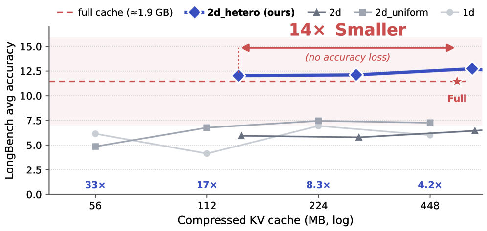

Why it matters왜 중요한가
Long-context reasoning pushes the KV cache into the tens of GB, and the field has three separate tools for it — evict tokens, drop bits, project to low rank. Almost everyone applies one tool with the same setting on every transformer layer.
긴 맥락 추론은 KV 캐시를 수십 GB로 밀어올리고, 이를 줄이는 도구는 세 갈래로 나뉜다 — 토큰 제거, 비트 줄이기, 저랭크 투영. 그런데 거의 모두가 하나의 도구를 모든 레이어에 같은 설정으로 적용한다.
MoE-nD's contribution is to route two axes jointly at per-layer granularity. Prior "per-layer" work is single-axis: AdaKV/PyramidKV route eviction budgets per layer, KVTuner routes quantization bits per layer — but nobody had chosen, per layer, whether to spend memory on eviction or on quantization. The paper first documents why that matters (layers respond to eviction with a 500×+ spread but to V-quant almost uniformly), then builds a mixture-of-experts router over the joint space. Because the router is a tiny offline greedy solver over a pre-measured sensitivity table, inference-time cost is that of an ordinary two-axis method.
MoE-nD의 기여는 두 축을 레이어 단위로 함께 라우팅하는 것이다. 기존 "레이어별" 연구는 단일축이다: AdaKV/PyramidKV는 제거 예산을 레이어별로, KVTuner는 양자화 비트를 레이어별로 배정한다 — 하지만 레이어마다 메모리를 제거에 쓸지 양자화에 쓸지를 고른 사람은 없었다. 논문은 왜 이게 중요한지 먼저 문서화하고(레이어는 제거에 대해 500×+의 편차로 반응하지만 V-양자화에는 거의 균일하게 반응), 그다음 결합 공간 위에 mixture-of-experts 라우터를 세운다. 라우터가 사전 측정된 민감도 테이블 위의 작은 오프라인 그리디 솔버이므로, 추론 시 비용은 평범한 2축 방법 수준이다.

By the numbers핵심 숫자
The result that carries the paper논문을 떠받치는 결과
| Method | KV mem (MB) | Compression | LongBench avg |
|---|---|---|---|
| full (no compression) | 1859 | 1× | 11.5 |
| 1d — uniform eviction | 56 | 33× | 6.1 |
| 2d_uniform — + fixed K8/V4 | 56 | 33× | 4.9 |
| 2d — per-layer quant routing | 139 | 13× | 5.9 |
| 2d_hetero (MoE-nD) | 136 | 14× | 12.0 |
In one diagram한 장의 그림
The core ideas핵심 아이디어
Layers are not equal
Apply one compression op to one layer and measure the attention-output error. At mild eviction (≤50%) the most- and least-sensitive layers differ only 1.6–2.6×, so uniform is defensible. But at 75%/90% eviction the spread explodes to 548×/689×, and K-quant spans 15–87×. Crucially, V-quant barely moves (1.2–1.6×) — so it's fine to apply uniformly, but eviction absolutely is not.
하나의 압축 연산을 한 레이어에만 적용하고 어텐션 출력 오차를 잰다. 약한 제거(≤50%)에선 가장·가장 덜 민감한 레이어 차이가 1.6–2.6×뿐이라 균일이 정당화된다. 그러나 75%/90% 제거에선 편차가 548×/689×로 폭발하고, K-양자화는 15–87×에 이른다. 결정적으로 V-양자화는 거의 안 움직인다(1.2–1.6×) — 그래서 균일 적용해도 되지만, 제거는 절대 아니다.
Each axis-setting is an expert
Every layer exposes three knobs: keep-ratio ∈ {0.1…1.0}, K-bits ∈ {16,8,4}, V-bits ∈ {16,8,4}. MoE-nD casts each combination as an "expert" and asks a router to pick the mix per layer under a single global memory budget M — the first method to route eviction and quantization jointly at layer granularity. (Low-rank and cross-layer sharing were deliberately excluded — they didn't compose cleanly with GQA sensitivity routing.)
각 레이어는 세 손잡이를 노출한다: 유지율 ∈ {0.1…1.0}, K-비트 ∈ {16,8,4}, V-비트 ∈ {16,8,4}. MoE-nD는 각 조합을 "전문가"로 두고, 라우터가 하나의 전역 메모리 예산 M 아래 레이어별 조합을 고르게 한다 — 제거와 양자화를 레이어 단위로 함께 라우팅한 최초의 방법. (저랭크·레이어 간 공유는 GQA 민감도 라우팅과 깔끔히 결합되지 않아 일부러 제외.)
10⁴² choices, solved in 50 ms
Exact search over (6·3·3)²⁸ ≈ 10⁴² routings is intractable, so MoE-nD reuses KVTuner's greedy allocator: start every layer at the cheapest config, then repeatedly upgrade the layer with the largest sensitivity reduction per unit memory (ΔS/Δm) until the budget is spent. The sensitivity table is built from a single 27-token prompt (5 kB, seconds to compute) and validated against a KL calibration at 0.945 Pearson.
(6·3·3)²⁸ ≈ 10⁴² 라우팅에 대한 정확 탐색은 불가능하므로, MoE-nD는 KVTuner의 그리디 할당기를 재사용한다: 모든 레이어를 가장 싼 설정에서 시작해, 메모리당 민감도 감소(ΔS/Δm)가 가장 큰 레이어를 반복 업그레이드하며 예산을 소진한다. 민감도 테이블은 27-토큰 프롬프트 하나로 만들고(5 kB, 초 단위), KL 보정과 Pearson 0.945로 검증했다.
How it works어떻게 작동하나
- Probe sensitivity offline.오프라인 민감도 측정. For each layer × op, apply the op to that layer only and record the relative L₂ error of its attention output vs. full precision → a 28×9 table S, persisted at 5 kB. 레이어 × 연산마다 해당 레이어에만 연산을 적용하고 어텐션 출력의 상대 L₂ 오차(풀 정밀도 대비)를 기록 → 28×9 테이블 S, 5 kB로 저장.
- Solve the budget.예산 배분. Greedily upgrade the layer with best ΔS/Δmem from the cheapest config until total KV size hits the global budget M. Produces one (keep, K-bits, V-bits) per layer in <50 ms. 가장 싼 설정에서 시작해 ΔS/Δmem이 최선인 레이어를 그리디하게 업그레이드, 총 KV 크기가 전역 예산 M에 닿을 때까지. 레이어당 (유지율, K-비트, V-비트) 하나를 <50 ms에 산출.
- Run the heterogeneous cache.이질적 캐시 실행. A patched attention kernel gives every layer its own cache length T_ℓ, tracks retained token positions, re-inverts RoPE from those positions, and fires eviction every 128 generated tokens. 패치된 어텐션 커널이 각 레이어에 고유 캐시 길이 T_ℓ를 부여하고, 유지된 토큰 위치를 추적하며, 그 위치로 RoPE를 재역변환하고, 128 토큰마다 제거를 발동한다.
- Isolate the real lever.진짜 지렛대 분리. The ablation chain 2d_uniform → 2d → 2d_hetero adds one routing axis at a time: per-layer eviction routing gives +15.0 pts avg on AIME (+5.7 on LongBench); per-layer quant routing gives ≈0. Honest scoping, not credit-grabbing. ablation 사슬 2d_uniform → 2d → 2d_hetero는 라우팅 축을 하나씩 더한다: 레이어별 제거 라우팅은 AIME 평균 +15.0점(LongBench +5.7); 레이어별 양자화 라우팅은 ≈0. 공을 부풀리지 않는 정직한 범위 규정.
What to take away그래서, 가져갈 것
Composing axes beats stacking them uniformly. At matched memory (~136 MB), joint per-layer eviction+quant routing more than doubles LongBench accuracy over per-layer-quant-only (12.0 vs 5.9) and restores full-cache quality at 14× compression.
축을 결합하는 것이 균일하게 쌓는 것을 이긴다. 같은 메모리(~136 MB)에서 결합 레이어별 제거+양자화 라우팅은 양자화만 하는 방법 대비 LongBench 정확도를 두 배 이상(12.0 vs 5.9)으로, 14× 압축에서 풀 캐시 품질을 복원한다.
Not all axes deserve routing. The paper's own numbers say V-quant is nearly layer-flat and quant routing adds ≈0 — so the useful complexity is per-layer eviction. That negative result is arguably as valuable as the method.
모든 축이 라우팅할 가치가 있는 건 아니다. 논문 자신의 수치가 V-양자화는 레이어에 거의 평탄하고 양자화 라우팅은 ≈0을 더한다고 말한다 — 그래서 유용한 복잡성은 레이어별 제거다. 이 음성 결과는 방법 못지않게 값지다.
Cheap to add, degrades gracefully. A 5 kB table + <50 ms CPU solve, and the hetero patch collapses to the standard uniform kernel when the solver picks equal configs — so uniform methods are a strict special case, not a competitor to reimplement around.
추가 비용이 싸고, 우아하게 퇴화한다. 5 kB 테이블 + <50 ms CPU 솔브, 그리고 솔버가 동일 설정을 고르면 hetero 패치가 표준 균일 커널로 붕괴한다 — 즉 균일 방법은 다시 구현할 경쟁자가 아니라 엄밀한 특수 케이스다.